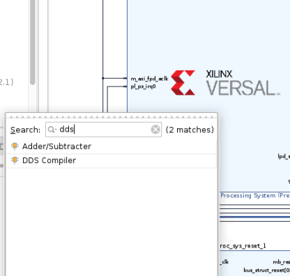
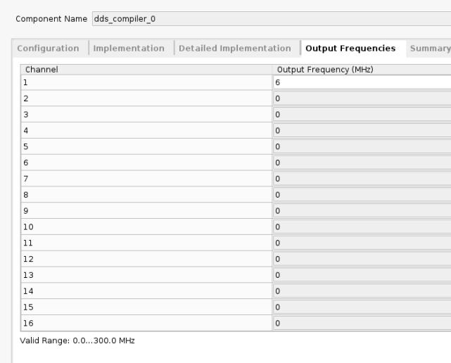
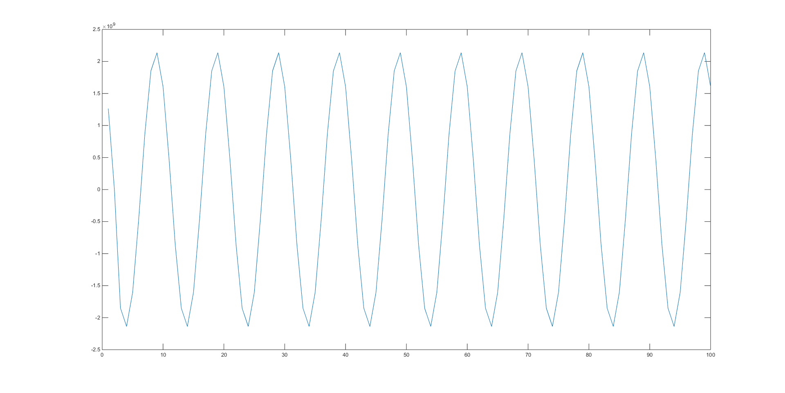

Vitis™ プラットフォームの作成チュートリアルxilinx.com の Vitis™ 開発環境を参照 |
カスタム IP を使用した Versal プラットフォームの作成¶
バージョン: Vitis 2021.2
Vitis プラットフォームの作成チュートリアル このチュートリアルは、基本の「Versal プラットフォーム作成チュートリアル」に対する「アドオン」です。そのため、各手順で必要に応じて、基本のチュートリアルの対応する部分へのリンクが表示されます。
このチュートリアルでは、VCK190ボードをターゲットとしています (https://japan.xilinx.com/products/boards-and-kits/vck190.html を参照)。
概要¶
チュートリアルの構成は次のとおりです。
手順 1: ハードウェア プラットフォームの作成¶
VCK190 ボード用にあらかじめ構築済みのデザイン例を使用して、ハードウェア プラットフォームを構築します。この方法を使用すると、IPインテグレーター ブロック デザインを手動で作成する必要がなく、時間を節約できます。
手順 0: Versal プラットフォーム作成チュートリアルの手順に従います。オプションの手順は省略できます。
手順 2: ブロックデザインへのカスタム IP の追加¶
この手順では、前の手順で作成したプラットフォーム デザインに DDS コンパイラ IP を追加します。DDS コンパイラ IP は、 Vivado® Design Suite のザイリンクス IP カタログに含まれています。この IP の詳細は、製品ガイド (PG141) を参照してください。これは一般公開 IP なので、シミュレーションがサポートされていますが、独自の IP コアを追加する場合は、シミュレーションをサポートするシミュレーション モデルを提供する必要があります。
前の手順で作成したシステム ブロック デザインを閉じてしまった場合は再度開きます。
[Add IP] (+ アイコン) ボタンをクリックして、dds を検索します。DDS コンパイラ IP をダブルクリックしてキャンバスに追加します。

DDS IP を次のように設定します。一部の設定は必須ではなく、このデザイン例の目的にのみ使用されることに注意してください。必須要件は、この IP には AXI4 ストリーム インターフェイスが 1 つしかないため、位相出力ポートはオフにする必要があるという点のみです。
a. [Configuration] タブの設定

b. [Implementation] タブの設定

c. [Detailed Implementation] タブの設定
このページはデフォルト設定をそのまま使用します。
d. [Output Frequency] タブの設定
周波数の値は調整できますが、サンプル レートに注意してください。クロック レートは 300 MHz です。1 サイクル内でサンプルが少なすぎると、正弦波を正しくサンプリングできません。

コンフィギュレーション ページを終了して、
aclkポートを Clocking Wizard のclk_out3信号に接続します。これでブロック デザインは次のようになるはずです。

[Platform Setup] ウィンドウを開き、M_AXIS_DATA ポートをイネーブルにします。SP タグを
AXISに設定します。Vitis™ リンカーではこれが使用されて、アクセラレータに接続されます。

ブロック デザインの出力ファイルを生成し直します。
ハードウェア プラットフォームをエクスポートします。プラットフォーム タイプを選択するページで、[Hardware and hardware emulation] を選択して、このプラットフォームでエミュレーションを実行します。
手順 3: PetaLinux でのソフトウェア コンポーネントの作成¶
この手順では、Vitis 統合ソフトウェア プラットフォームの必須コンポーネントを含む PetaLinux プロジェクトを作成します。手順 2: Versal プラットフォーム作成チュートリアルの手順に従います。
手順 4: Vitis ソフトウェア プラットフォームでのプラットフォームのパッケージ¶
この手順では、Vitis IDE でハードウェア XSA をソフトウェア コンポーネントと共にパッケージします。手順 3: Versal プラットフォーム作成チュートリアルの手順に従います。
手順 5: プラットフォームのテスト¶
この手順では、簡単な vadd アプリケーションを構築し、ハードウェア エミュレーションを実行してプラットフォームをテストします。手順 4: Versal プラットフォーム作成チュートリアルの指示に従いますが、いくつか変更を加えます。
そのページでテスト 2 を実行するだけです。vadd システム プロジェクトを作成したら、次のように変更をします。
vadd_kernelsプロジェクトのsrcフォルダーの下にあるkrnl_vadd.cppファイルを開きます。このファイルの先頭に次のヘッダー ファイルを追加します。これらは、AXIS データ型および HLS ストリーム データ型をサポートするために使用されます。
#include "ap_int.h" #include "ap_axi_sdata.h" #include "hls_stream.h"カーネル関数定義の前に
pktという名前の型を定義します。
typedef ap_axis<15, 0, 0, 0> pkt;最上位関数に 2 つのポートを追加します。
dds_inポートは AXI4-Stream 型で、wave_outポートは AXI-MM 型です。
void krnl_vadd(uint32_t* in1, uint32_t* in2, uint32_t* out, int size, int *wave_out, hls::stream<pkt> &dds_in) {このデザインでは、DDS IP からのデータは処理されず、DDR 出力へ渡されるだけです。これには、関数本体に次のように数行を追加します。
for (int i = 0; i < 1024; i++) { #pragma HLS PIPELINE II = 1 pkt value = dds_in.read(); wave_out[i] = value.data; }これでカーネル コードの変更が完了しました。作業を保存してファイルを閉じます。
注記:
vaddカーネルを完全な修正コードについては、カーネル コードの修正を参照してください。
Vitis リンカーでカーネルの AXI ストリーム ポートとプラットフォームの対応インターフェイスを正しくリンクするようにするには、
system.cfgというコンフィギュレーション ファイルを作成し、次の行を追加します。
[connectivity] stream_connect = AXIS:krnl_vadd_1.dds_inこのコマンドは、2 つの AXI4-Stream ポート間の接続を示します。コロンの前はマスター インターフェイスの名前で、コロンの後はスレーブ インターフェイスの名前である必要があります。このデザインの場合、パラメーターからの AXIS sptag はAXI マスター側を表しているため、先に配置します。ここでは、プラットフォームの作成時に定義された sptag を指定するだけで、Vitis リンカーが自動的に検出します。
system_cfg ファイルは vadd_system_hw_link プロジェクトの下に置きます。ほかのディレクトリを選択することもできますが、バイナリ コンテナー設定でそのディレクトリを正しく指定するようにしてください。
バイナリ コンテナー設定で config ファイルを指定します。

次に、ホスト コードを変更して、DDR からデータを読み取ります。
vaddプロジェクトのsrcフォルダーの下にあるvadd.cppファイルを開き、次のように変更します。a. ヘッダー ファイルを追加します。
#include "ap_int.h" #include <stdio.h>
b. DDS 出力データ用に新しい
cl_mem bufferを作成します。cl::Buffer buffer_waveout(context, CL_MEM_WRITE_ONLY, 1024*sizeof(int));
c. バッファーをカーネルにボンディングします。
krnl_vector_add.setArg(narg++,buffer_waveout);
d. ホスト バッファーをデバイス バッファーにマップします。
int *ptr_waveout = (int *) q.enqueueMapBuffer (buffer_waveout , CL_TRUE , CL_MAP_READ , 0, 1024*sizeof(int));
e. DDR からデータを読み出します。
q.enqueueMigrateMemObjects({buffer_waveout},CL_MIGRATE_MEM_OBJECT_HOST);
f. データがファイルに保存されます。DDS コンパイラの IP 出力は 16 ビットの符号付きデータで、ホスト バッファーの 32 ビット整数データであるため、データは 17 ビット左にシフトされます。これは、追加の符号付きビットを削除し、実際のペイロード データを保持するためです。
FILE *fp_dout; fp_dout=fopen("wave_out.txt","w"); for (int i = 0; i < 1024; i++) { fprintf(fp_dout,"%d\n",ptr_waveout[i]<<17); } fclose(fp_dout);
g. バッファーのマップを解除します。
q.enqueueUnmapMemObject(buffer_waveout , ptr_waveout);
注記:
vaddホスト アプリケーションの完全な修正コードについては、ホスト コードの修正を参照してください。変更した
vaddアプリケーションでエミュレーションを実行します。手順 4 - エミュレーション: Versal プラットフォーム作成チュートリアルの手順に従います。コンソール ウィンドウに「Test Passed」と表示されたら、生成された
wave_out.txtファイルを QEMU ターゲットからコピーします。XSCT コンソール ウィンドウをまだ起動していない場合は、まずXilinxメニューから起動します。
次のコマンドを使用して tcf ターゲットに接続します。
connect -host 127.0.0.1 -port 1440次のコマンドを使用して、tcf ターゲットからホスト マシンに wave_out.txt ファイルをコピーします。
tfile copy -to-host /mnt/sd-mmcblk0p1/wave_out.txt $(YOUR_DIR)/wave_out.txtwave_out.txt ファイルが $(YOUR_DIR) にコピーされます。データをプロットするツールを選択します。選択可能なオプションには MATLAB® があります。MATLAB がインストールされていない場合は、Excel などのその他のサードパーティ ツールでも同様の機能が提供されます。ツールを選択して、正弦波を出力します。

サポート¶
GitHub 問題は、リクエストやバグの追跡に使用します。質問については、forums.xilinx.com を参照してください。
ライセンス¶
Apache ライセンス、バージョン 2.0 (以下「ライセンス」) に基づいてライセンス付与されています。本ライセンスに準拠しないと、このファイルを使用することはできません。
ライセンスのコピーは、http://www.apache.org/licenses/LICENSE-2.0 から入手できます。
適切な法律で要求されるか、書面で同意された場合を除き、本ライセンスに基づいて配布されるソフトウェアは、明示的または黙示的を問わず、いかなる種類の保証または条件もなく、「現状のまま」配布されます。ライセンスに基づく権限と制限を管理する特定の言語については、ライセンスを参照してください。
XD019 | © Copyright 2021 Xilinx, Inc.